80•90•2000
Historias que
Atravessaram
Gerações
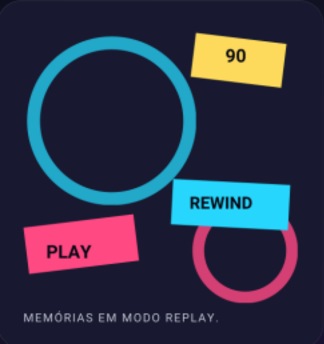
Uma viagem pela TV, pelos herois e pelas animações
que transformaram tardes comuns em grandes aventuras.
ANTES DOS ANOS 90
CLÁSSICOS QUE CHEGARAM
PARA FICAR
Duas produções anteriores aos anos 90 que permaneceram vivas
na memória de quem cresceu cercado por fantasia e aventura.
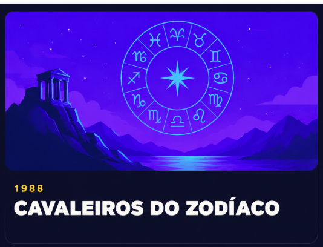
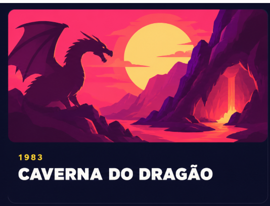
Faixa especial
HERÓIS QUE DOMINARAM A TV
Tokusatsu, ação e personagens que viraram memória afetiva.
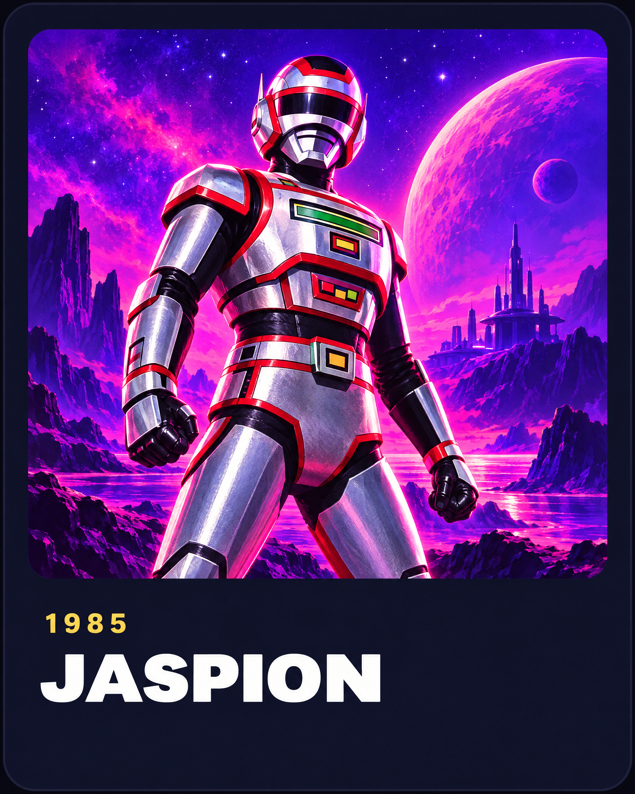
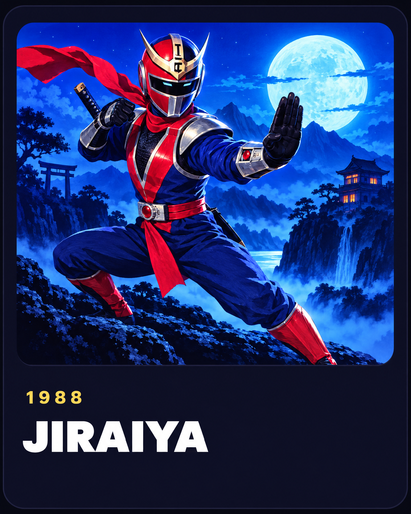
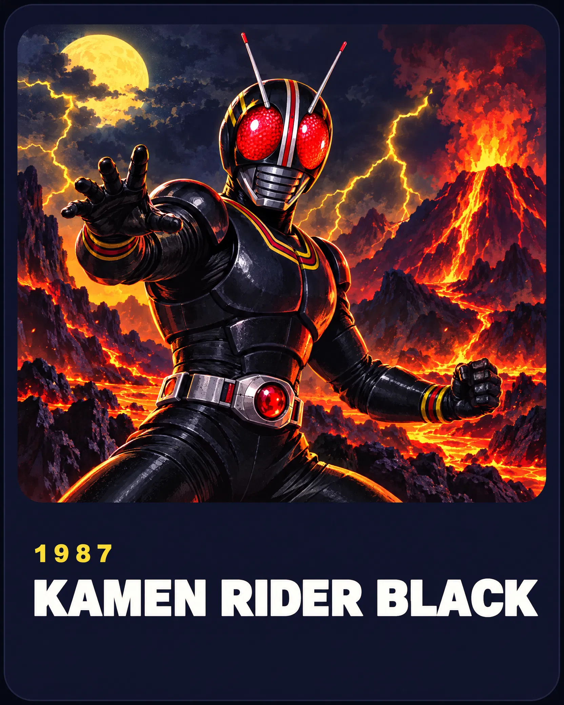
O passado continua no presente
NOVAS PRODUÇÕES,
VELHAS EMOÇÕES
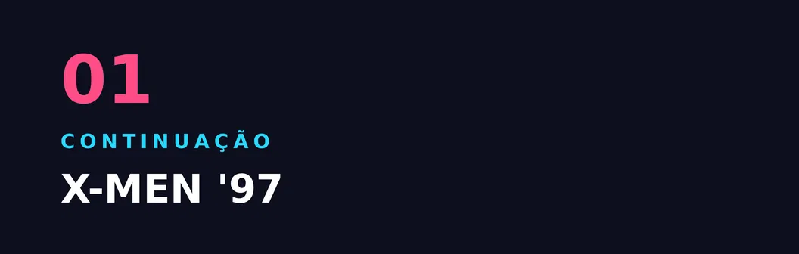
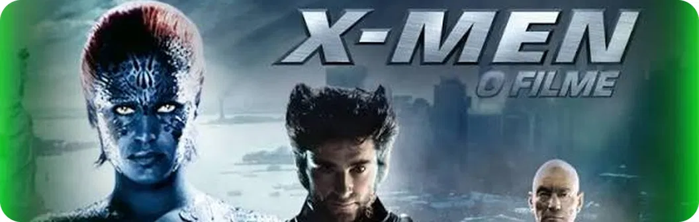
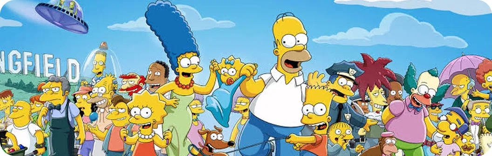
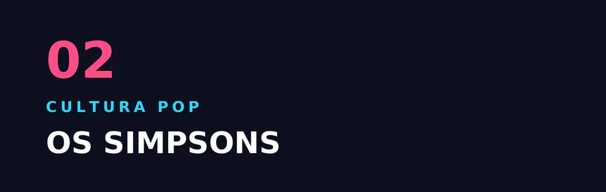

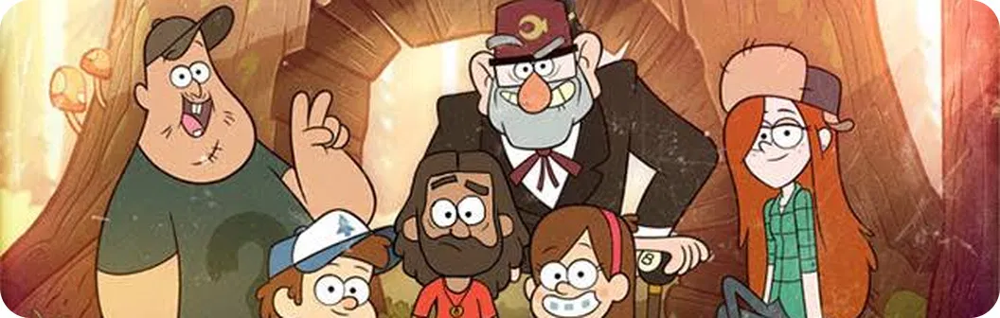